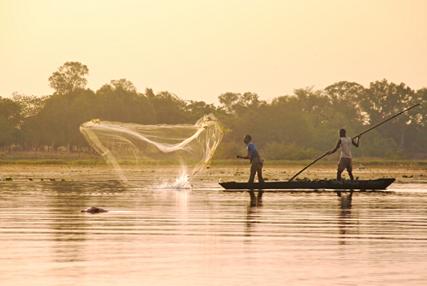
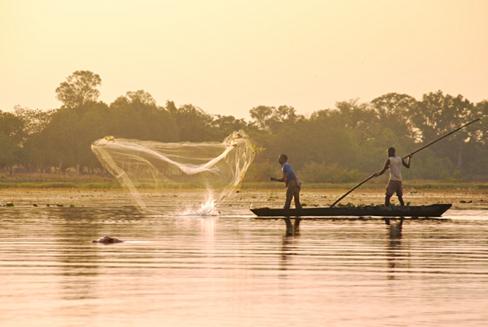

Le Lac de Tingrela est un site naturel situé dans la région du Nord-Ouest du Burkina Faso, près du village de Tingrela, dans la province de la Kossi.
Ce lac est connu pour ses eaux calmes et ses paysages sereins, entourés de collines et de savanes typiques de la région.
Il constitue un lieu de détente et un espace important pour la pêche et les activités agricoles des populations locales.

Description du site
Cette lac s'étend sur plusieurs hectares et présente une eau claire, abritant une biodiversité variée.
Les rives sont bordées par une végétation dense composée d'arbres, de buissons et de plantes aquatiques,
offrant un habitat favorable à de nombreuses espèces d'oiseaux, poissons et autres animaux.
Le site est propice à la randonnée, à l'observation de la faune et à la pratique de la pêche traditionnelle.
Les habitants utilisent le lac pour l'irrigation et les activités agricoles, faisant de ce lieu un élément central de la vie locale.

Historique
Le Lac de Tingrela a une importance culturelle et économique majeure pour les communautés qui vivent autour.
Historiquement, il a été un point d'eau vital dans une région souvent marquée par la sécheresse.
Le lac a contribué à l'établissement des villages alentours, notamment Tingrela, en fournissant une source durable d'eau pour l'homme, le bétail et l'agriculture.
Au fil du temps, ce site naturel est devenu aussi un lieu de rassemblement social et festif,
notamment lors de certaines cérémonies traditionnelles.
Sa préservation est aujourd'hui un enjeu important pour les autorités locales afin de maintenir cet équilibre entre environnement et développement.
 
